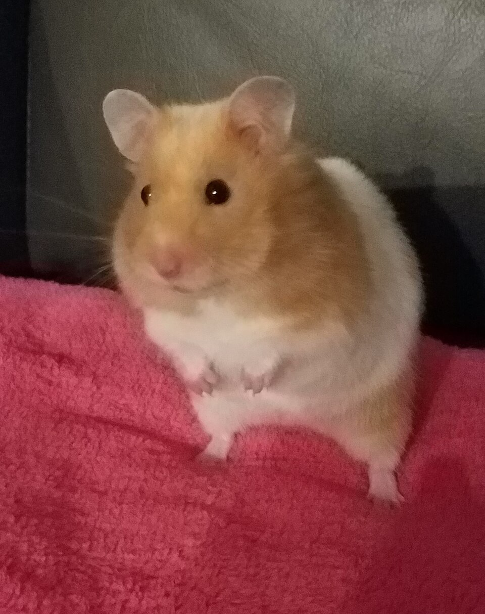

Скільки живуть домашні гризуни: щури, хомʼяки, свинки, дегу
Коротко
Найкоротший вік серед цих тварин у мишей, приблизно 1,5–2 роки. Щури й хомʼяки зазвичай живуть до 2–3 років, морські свинки до 8, а дегу 5–9 років.
Важливо. Це загальна інформація з відкритих джерел, а не діагноз чи призначення. Перш ніж ухвалювати будь-яке рішення щодо здоровʼя тварини, порадьтеся з ветеринаром і перевірте інформацію. Як ми готуємо матеріали

Порівняльна таблиця
| Тварина | Середня тривалість за належного догляду |
|---|---|
| Миша | 18–24 місяці |
| Щур | до 3 років |
| Сирійський хомʼяк | 2–3 роки |
| Карликовий хомʼяк | 2–3 роки |
| Морська свинка | до 8 років |
| Дегу | 5–9 років |
Це орієнтовні середні значення з памʼяток PetMD. Окремі тварини живуть менше чи довше.
Що найбільше впливає
- Раціон, що відповідає виду, без надлишку цукру й жиру.
- Чисте житло без різких запахів і протягів.
- Рух, заняття й спокійне поводження.
- Планові огляди: для хомʼяків PetMD радить щонайменше раз на рік.
- Звернення до лікаря при перших змінах: дрібні тварини погіршуються швидко.
Чому важливо записувати
У таких тварин зміни ваги чи апетиту можуть бути єдиним раннім сигналом. Регулярні записи допомагають помітити тенденцію й показати її лікарю.
Що записати перед дзвінком ветеринару
- вік тварини
- вага в динаміці
- перенесені хвороби й лікування
Такі нотатки легше вести в одному місці. Саме для цього ми робимо Roddi Health.
Хочу ранній доступДжерела
Roddi Health не є ветеринарною клінікою і не надає ветеринарних послуг. Матеріал має лише інформаційний характер, може бути неповним або застарілим і не замінює огляду лікаря. Ви самостійно приймаєте рішення щодо догляду за твариною. Назви джерел наведено для посилання: вони не писали й не схвалювали цей текст. Докладніше про матеріали блогу.